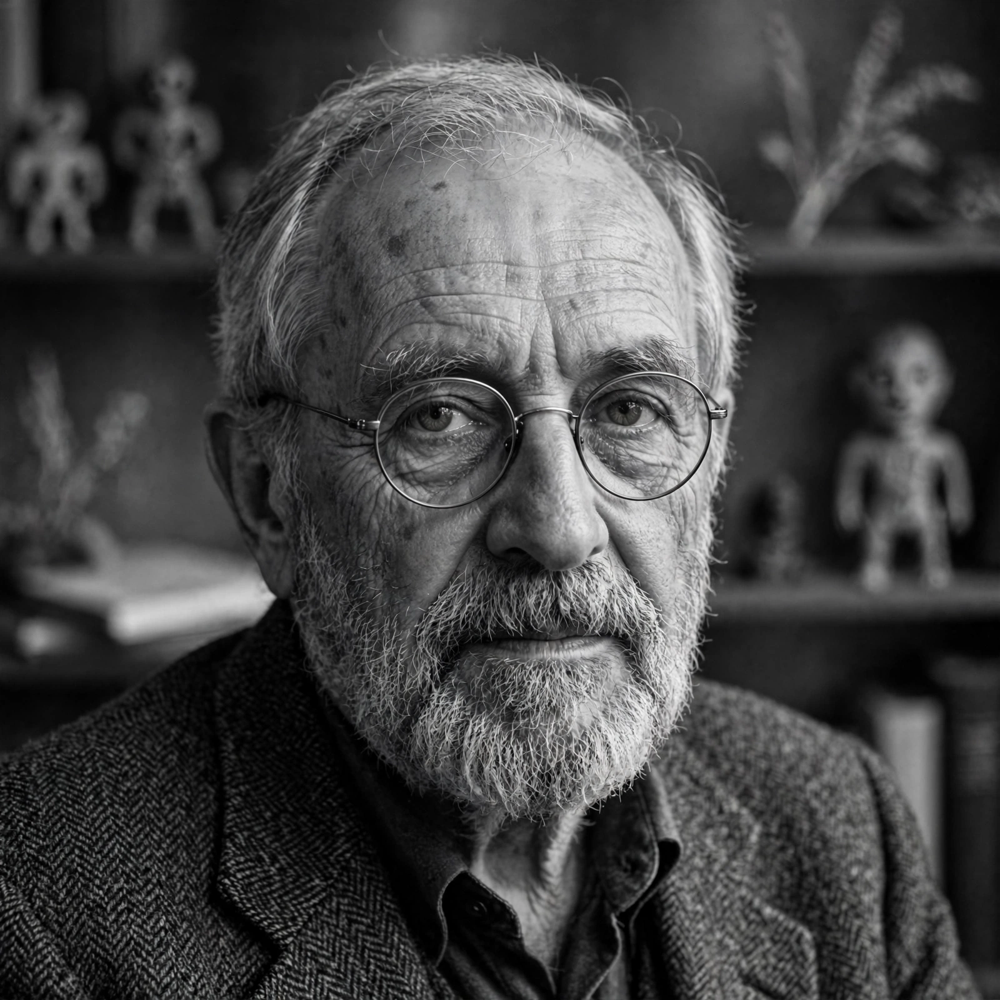

Claude Lévi-Strauss (28 November 1908 – 30 October 2009) was a French anthropologist and ethnologist whose work was key in the development of structuralism and structural anthropology.

| Claude Lévi-Strauss | |
|---|---|
| Born | 28 Nov 1908, Brussels |
| Died | 30 Oct 2009, Paris |
| Field | Anthropology, ethnology |
| Known for | Structural anthropology, study of myth |
Born in Brussels to French Jewish parents, he did fieldwork among Indigenous peoples in Brazil in the 1930s, described in Tristes Tropiques (1955). In New York exile during WWII he met Roman Jakobson, whose linguistics shaped his structural method.
The Elementary Structures of Kinship (1949), The Savage Mind (1962), and the four-volume Mythologiques analysed kinship, myth and classification through binary oppositions and underlying structures. He held a chair at the Collège de France and was elected to the Académie française. See ethnography and cultural anthropology.